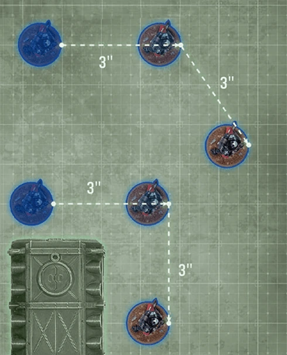
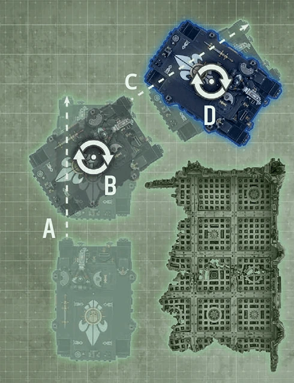
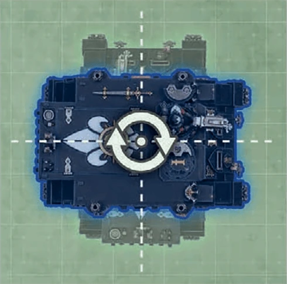

Moving Units
Digital 11EThere are several types of move a unit can make. Each one defines which units are eligible to make it, what its maximum distance or set-up distance is, and any conditions that must be met.
Each time you move a unit, you can move one or more of its models, one at a time, by moving it in a straight line and/or rotating it, as many times as you want to.
Each time you move a model, unless otherwise stated:
- It can be moved through friendly models.
- It can be moved through any space its base can fit through.
- Its base cannot be moved through enemy models.
- Its base cannot cross the edge of the battlefield.
- All stated ‘While Moving’ conditions must be met.
Moving a Model in a Straight Line
Each time you move a model in a straight line, move it horizontally across the battlefield. Measure from the same point on its base at the start and end of that move, and add that distance to any other distance it has moved since its unit began that move. The distance moved cannot be greater than the maximum distance of that move type.
Rotating a Model
Each time you rotate a model, turn it any amount around the centre of its base, while keeping it upright. Note that rotating a model does not count towards the distance it has moved.
Ending a Move
After you have finished setting up all of the models in a unit and/or moving all of the models in a unit that you want to move, check that all of the following apply:
- If that unit is on the battlefield, it is in .
- No models in that unit are on another model or partway through a surface of a terrain feature (e.g. a wall or ceiling).
- All stated ‘After Moving’ conditions are met.
If one or more of the above conditions are not met, that unit cannot make that move and its models are returned to their positions at the start of that move. Otherwise, after resolving any additional rules stated in the ‘After Moving’ section of that move type, that move ends.
See also
- Terrain
MOVE TYPES
MOVING IN A STRAIGHT LINE
Both models shown here can move a maximum distance of 6". They both move 3" in a straight line, then 3" in another straight line, for a total movement of 6".
ROTATING
This model can move a maximum distance of 12". It moves in a series of straight lines and rotations, as follows:
A) Moves 6" in a straight line
B) Rotates
C) Moves 6" in a straight line
D) Rotates This model has moved a total of 12".
ROTATING
Models without a base are rotated around their central axis (see , .






Different Move Characteristics
When making a move type whose maximum distance uses the unit’s M characteristic, if different models in the moving unit have different M characteristics, the maximum distance for that move will be different for those models.
Example: If a unit makes a and all models in that unit have an M characteristic of 6" except for one model with an M characteristic of 9", that model’s maximum distance for that move is 9", while the other models’ maximum distance is 6". While that unit is making that move, all other restrictions must be met.
Moving Over Or Through Models
Some models have a rule that enables them to ‘move over models’, ‘move through models’ or ‘move over models as if they were not there’ when making a move. When moving a model with such a rule, it can make its move through enemy models, but must follow all other restrictions of the move they are making.
Random Movement
See
When Moving Up To
Some rules allow a unit to make a stated <move type> of up to X". That stated distance is the maximum distance for that move.